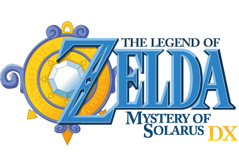

Zelda solarus
Segun la propia web del proyecto
Solarus es un motor de juegos Action-RPG gratuito y de codigo abierto, con licencia GPL y esta escrito en C++. Ejecuta quest (campañas?) en Lua y puede trabajar en un gran numero de plataformas.
Solarus tambien cuenta con un editor de juegos llamado Solarus Quest Editor escrito en C++ con Qt para ayudarte a crear un juego.
Por que los proyectos utilizan el palabro “open source” si estan bajo la licencia GPL?
Aunque en la web no se especifa, en la practica el motor fue creado para hacer un videojuego fan-tributo de Zelda, y todos las juegos que de el han nacido tiene que ver con Zelda, al parecer utilizan recursos salidos directamente de un titulo de nintendo, ni idea de cual, supongo sera de snes. Por suerte el proyecto parace no tener problemas legales de ningun tipo.

THE LEGEND OF ZELDA Mystery Of Solarus DX es el primer titulo que pruebo con respecto a la saga zelda, sin importar ser o no un fan-game tiene una calidad brutal, dificultad imposible y es muy adictivo. Reconosco que para terminarlo fue necesario ver una guia (del propio creador) en no pocas ocaciones, no sin antes pasar horas sin saber que hacer… tambien modifique el fichero de salvamento para poner el dinero y municion a tope.
En definitiva si tuviese dinero compraria una consola e intentaria con algun titulo oficial. Si tuviese mas dinero compraria nintentdo y pondria su hardware/software libre tras un perido no mayor a 5 años luego del lanzamiento del titulo… un hombre debe tener sueños.
Compilar solarus-engine desde repositorios
La lista de dependencias en Debian salio directamete del sitio web, si ya tienes el
codigo fuente de solarus puedes ver los pasos en el fichero compilation.txt.
instalar dependencias en Debian
apt-get install libsdl2-dev libsdl2-image-dev libsdl2-ttf-dev libluajit-5.1-dev libphysfs-dev libopenal-dev libmodplug-dev libvorbis-dev
En el caso de fedora me he limitado a buscar el equivalente. Compilo cosas por pasatiempo y mi sistema ya tiene un monton de librerias, a modo de prueba intete compilar sin instalar nada mas y… compilo, si encuentras algun inconveniente no dudes en enviar un correo.
instalar dependencias en fedora
dnf -y install SDL2-devel SDL2-image-devel SDL2-ttf-devel luajit-devel physfs-devel openal-soft-devel libmodplug-devel libvorbis-devel
creamos una carpeta donde estara el codigo del motor y el de los tres juegos que aparecen listados en la pagina de solarus
mkdir solarus
cd solarus
clonamos el motor y los tres juegos
git clone https://github.com/solarus-games/solarus.git
git clone https://github.com/solarus-games/zsdx.git
git clone https://github.com/solarus-games/zsxd.git
git clone https://github.com/solarus-games/zelda-roth-se.git
compilamos el motor
cd solarus
mkdir build
cd build
cmake ..
make
Si la compilacion fue exitosa ya podemos ejecutar los juegos. Sin cambiar de directorio ejecutamos
./solarus_run ../../zsdx/
./solarus_run ../../zsxd/
./solarus_run ../../zelda-roth-se/
los tres titulos se encuentran traducidos al español, las teclas de funcionamiento son ajustables y tambien tiene soporte para joystick (en concreto tengo el Logiteth 710, que funciona de forma nativa sin instalar nada)
recientemente inicie zelda-roth-se, por motivos desconocidos los caracteres “raros” del español (acentos y eñes) no se ven.
puedes encontrar mas juegos (de zelda) basados en el motor solarus en el foro en la seccion de proyectos